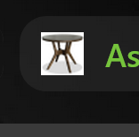

| Tags | Definitions | Examples |
|---|---|---|
| <!DOCTYPE html> | Declares that the document is an HTML5 programming. | No examples* |
| <html lang="en"> | opens HTML document and declares that the page is English. | This page is set to “en” for English. This tag helps websites such as Google Translate know the default language for this page is English. |
| <meta charset="UTF-8"> | Defines the chart set used in the webpage. | No examples* |
| <title>...</title> | Defines the tab name. | |
| <style>...</style> | Section that describes the internal CSS of the page. | |
| <link rel="stylesheet" href="style.css"> | Tag that points to an external CSS file. | The homepage and this page point to a common style.css file that controls the look of these pages. |
| <link rel="icon" type="image/x-icon" href="tabler.png"> | Tag that adds a fav icon |  |